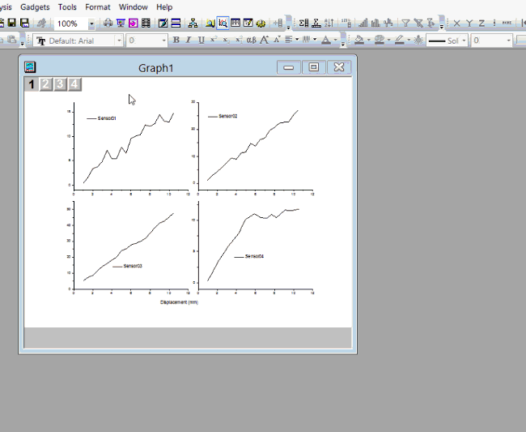

FAQ-713 異なるレイヤのラベルのフォントサイズを同じに設定するには？
Set-same-size-label
最終更新：2019/01/04
グラフのすべてのレイヤに同じフォントサイズを設定したい場合
- 最初に環境設定からテーマオーガナイザを開きます。グラフタブで、Layer No Element
Scalingを選択してWYSIWYGにします。
- グラフ内の任意のラベルを選択してフォントサイズを設定します。
- それを右クリックして「フォーマットコピー」を選択します。その下にサブメニューがある場合は、SyleやFontなどの適切なものを選択してください。
- 同じフォントサイズを他のすべてのレイヤに適用するには、任意のレイヤの外側のどこかを右クリックして、[フォーマットの貼り付け先：すべて：フォント]を選択します。
- 
キーワード:ラベル、複数レイヤ、一環、テキスト